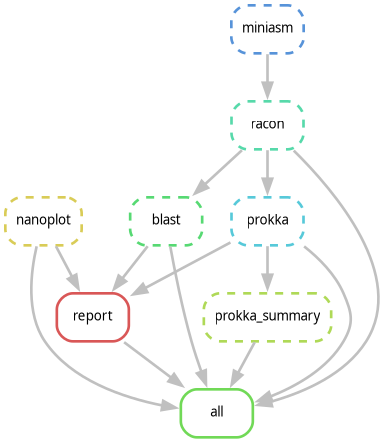
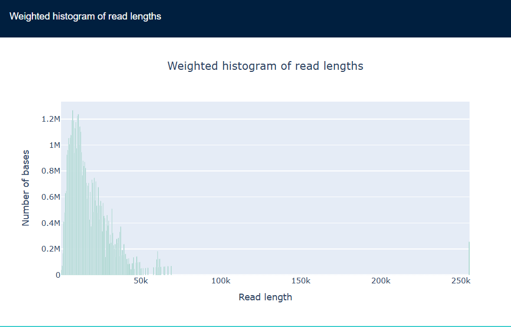
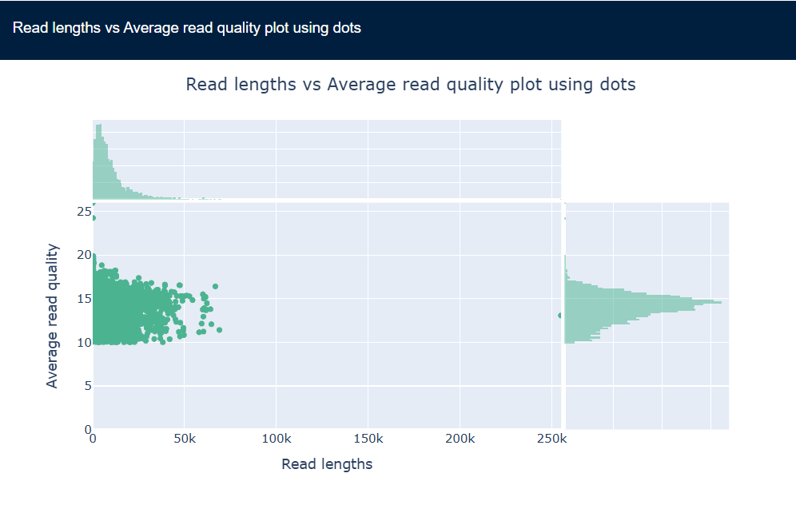
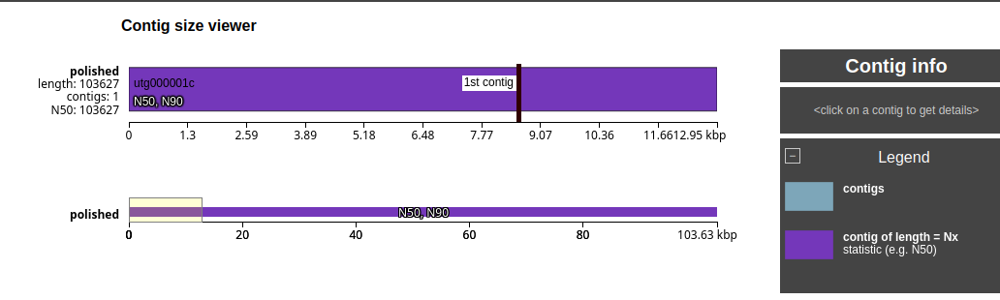

Nanopore Genome Assembly
Report
Objective
To assemble, quality assess, characterize, and annotate a genome from
Nanopore long-read sequenicng data using a Snakemake workflow
Methods
Pipeline implemented in Snakemake with reproducible Conda
environment.
Workflow:

Snakemake DAG
- Raw read QC - NanoPlot
- Overlap generation - Minimap2
- Assemby - Miniasm
- Polishing - Racon
- Assembly QC - QUAST
- Contig Characterization - BLAST
- Annotation - Prokka
Results
Read QC

Read Length Distribution

Length Vs Quality Scatter
Plot
Mean read length: 9,677 bp N50:
14,392 bp
Assembly QC (QUAST)
| Metric |
Value |
| Number of contigs |
1 |
| Total length |
103,627 bp |
| GC content |
48.78% |
| N50 |
103,627 bp |
| L50 |
1 |
| Ambiguous bases |
0 |

QUAST Icarus View
- Interpretation: A near-complete single-contig assembly was
generated.
BLAST Characterization
| Contig |
Best BLAST Hit |
Identity (%) |
Align.Length (bp) |
E-value |
Bit Score |
| utg000001c |
Vibrio phage 1.024.O._10N.261.45.F8 |
99.978 |
35,994 |
0.0 |
66,417 |
- Interpretation: The top BLAST hit spans ~36kb of the 103 kb
assembly, suggesting partial similarity to a related Vibrio phage
genome.
Prokka Annotation
Discussion
- The pipeline successfully assembled a single contig of 103,627 bp
from Nanopore reads.
- BLAST analysis identified strong similarity to a Vibrio phage over a
~36kb region with 99.97% identity.
- Prokka annotation predicted 153 CDS and 3 tRNA genes, suggesting a
compact viral genome structure.
- Overall, results are consistent with a phage-associated genome
assembly.